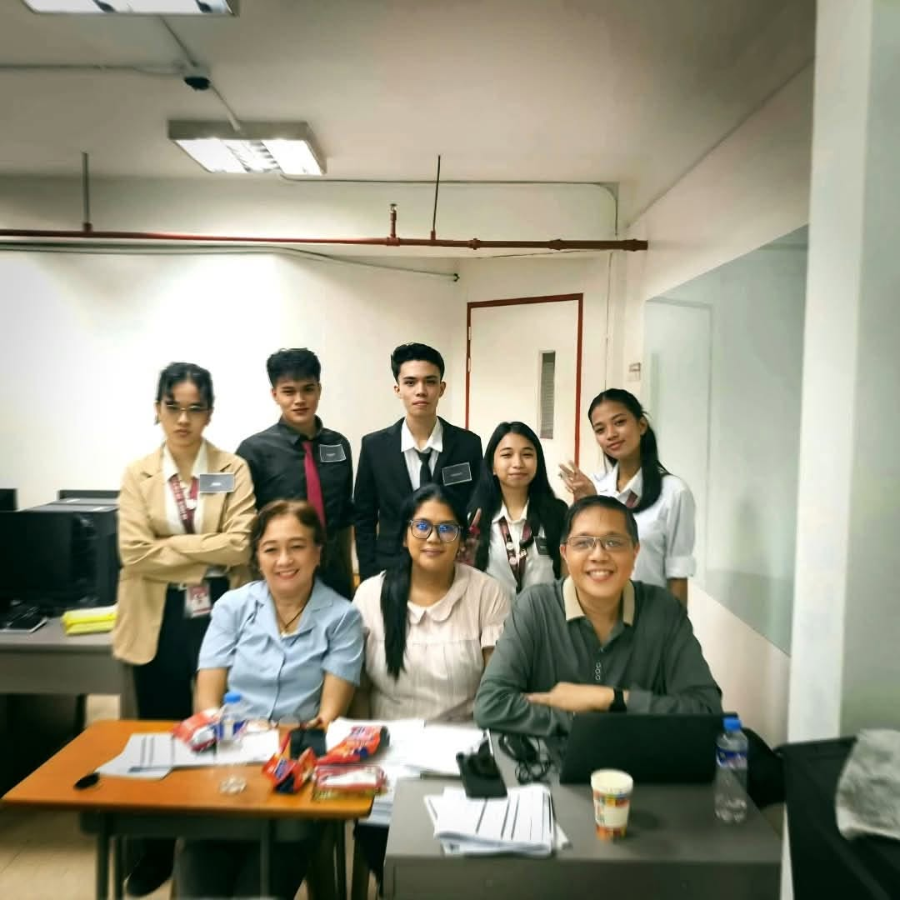
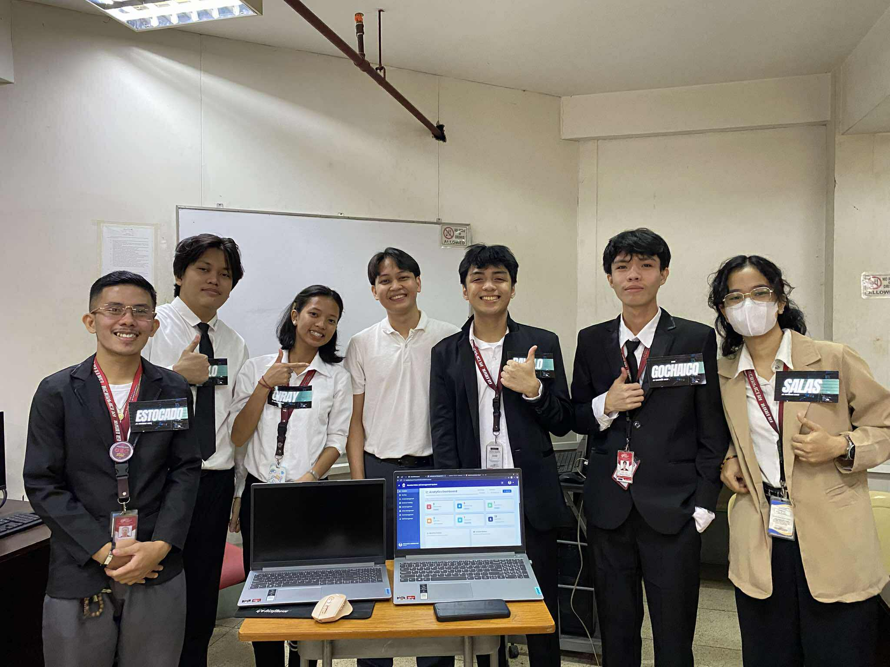

TindaMate — Mobile POS & Ledger
Specialized retail POS and inventory app with multi-item cart, customer credit ("utang") ledger, and automated COGS profit analytics.
I'm a full-stack developer. I build modern web & mobile apps, and these days I'm focused on scalable backends & AI integrations.
Currently a graduating 4th-year BSIT student — just 1 semester away from finishing my degree. I love turning architectural diagrams and complex ideas into clean, reliable software that people actually use.
Specialized retail POS and inventory app with multi-item cart, customer credit ("utang") ledger, and automated COGS profit analytics.

Enterprise record, plot management, and booking platform powered by PHP MVC REST API, MySQL database, and Python Flask AI forecasting.

Engineering analysis and architectural diagrams documenting component decoupling, API boundaries, and database trade-offs.
BS Information Technology — Caloocan City
Completing final senior capstone engineering and university degree requirements (1 semester remaining). Exploring full-stack lifecycles from architecture blueprints and database schema normalization to REST API integrations.
Independent Production Work
Developing practical, scalable applications to master modern frontend and backend technologies. Emphasizing clean folder structures, modular vanilla JavaScript, responsive CSS design systems, and database relationships.
Academic & Online Technical Training
2025
Computer Studies Department
2025
Technical Coursework
2025
I am a graduating 4th-year BS Information Technology student and aspiring Full-Stack Web Developer with just one semester remaining before graduation. My goal is to build performant, reliable, and user-centric digital products that solve real-world problems.
My technical focus centers on modern frontend architectures, clean state management, RESTful APIs, and relational database systems (MySQL & PostgreSQL). I believe in writing readable, maintainable code and continuously exploring new frameworks and architectural patterns.
Outside of programming, I focus on continuous personal development, studying emerging software patterns, and collaborating with fellow developers. Great software combines disciplined execution with clear communication.
I'm currently seeking junior developer positions, internships, and freelance projects where I can contribute and continue to grow. Whether you have an opportunity or just want to chat tech, feel free to reach out.